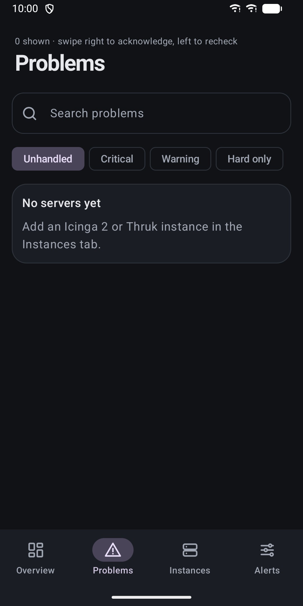
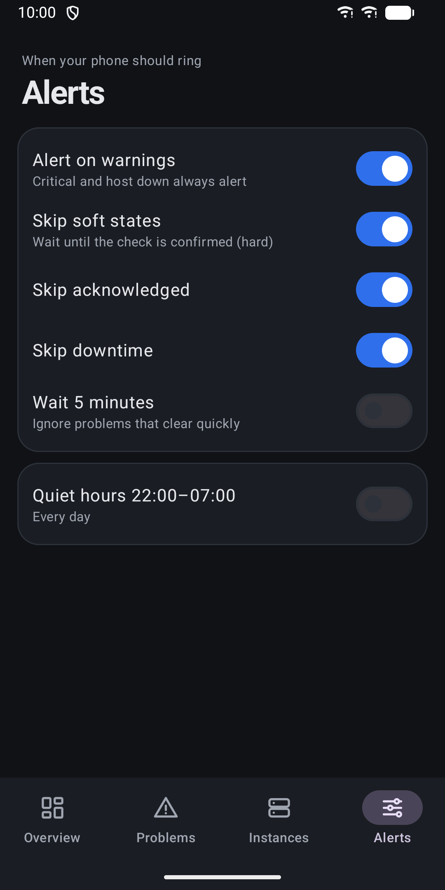

Tinag2: Icinga & Nagios Alarme
Icinga-2- und Nagios-Probleme im Blick, bestätigen und Alarme erhalten.





Über die App
Tinag2 ist ein Android-Client für Icinga 2 und Nagios/Naemon (über Thruk). Sieh, was ausgefallen ist, reagiere darauf und lass dich benachrichtigen, direkt auf dem Smartphone. Verbinde deine eigenen Monitoring-Server. Du kannst beliebig viele hinzufügen; sie werden parallel abgefragt. Die App spricht nur mit den Servern, die du selbst einträgst. Es gibt kein Konto und keinen Server des Entwicklers. ÜBERSICHT - Anzahl kritischer Probleme, Warnungen, unbekannter Zustände und ausgefallener Hosts - Karte "Needs you now" für unbearbeitete Probleme - Anzeige der Servicegesundheit und eine Karte pro Server - Zeigt das Alter der Daten und behält die letzten guten Daten, wenn ein Server nicht erreichbar ist PROBLEME - Eine Liste nach Dringlichkeit sortiert: unbearbeitete zuerst, schlimmster Zustand zuerst, älteste zuerst - Filter für unbearbeitet, kritisch, Warnung und harte Zustände - Suche per Text oder regulärem Ausdruck - Services auf ausgefallenen Hosts sind standardmäßig ausgeblendet - Bestätigte Probleme und Probleme in Wartungszeit erscheinen gedämpft - Nach rechts wischen zum Bestätigen, nach links für einen erneuten Check. Dieselben Aktionen gibt es als Bedienungshilfen-Aktionen. - Detailansicht mit Zustand, Prüfversuchen, Ausgabe sowie letztem und nächstem Check - Wartungszeit von einer Stunde setzen ALARME - Benachrichtigt nur bei neuen oder schlimmer gewordenen Problemen - Die Benachrichtigung verschwindet, wenn das Problem behoben oder bearbeitet ist - Regeln: Warnungen an oder aus, weiche Zustände überspringen, bestätigte überspringen, Wartungszeit überspringen, 5 Minuten vor dem Alarm warten - Ruhezeit von 22:00 bis 07:00, optional mit Ausnahme für kritische Alarme - Eigene Benachrichtigungskanäle für kritisch und Host down, Warnungen, unbekannt und Verbindungsprobleme - Direkt aus der Benachrichtigung bestätigen WIDGETS - Zähler-Widget mit Anzahl kritisch, Warnung und unbekannt - Listen-Widget mit den dringendsten unbearbeiteten Problemen VERBINDUNG UND SICHERHEIT - Icinga-2-REST-API und Thruk-REST-API - HTTP-Basic-Authentifizierung - Optionales Pinning des Zertifikat-Fingerabdrucks, für selbstsignierte Server - Passwörter werden mit dem Android Keystore verschlüsselt - Einfaches HTTP ist für lokale Netze erlaubt; die App warnt dich dabei - Keine Werbung, keine Analyse, kein Tracking DETAILS - Hintergrundabgleich alle 15 Minuten sowie Aktualisieren per Herunterziehen - Helles und dunkles Design nach Systemeinstellung - Auf dem Smartphone untere Navigation, auf Tablets Listen- und Detailansicht Tinag2 braucht einen Icinga-2- oder Thruk-Server, den du vom Smartphone aus erreichen kannst.